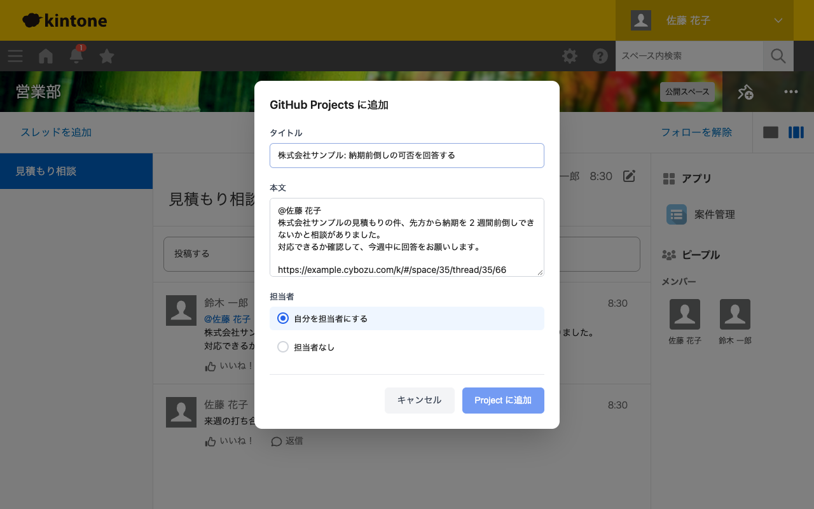
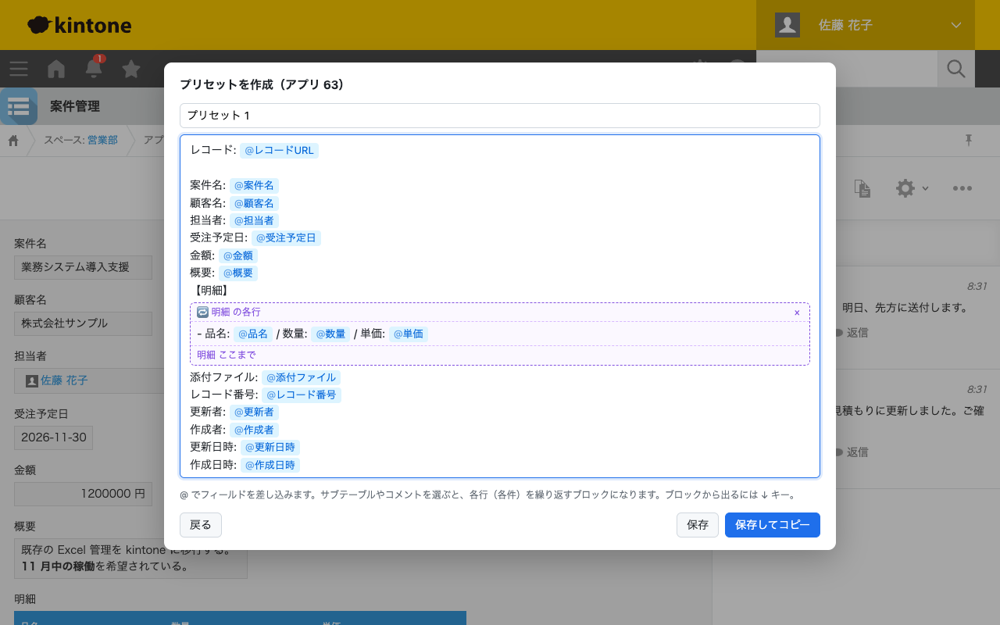

hayame
YouTube の動画で、人が喋っていない区間だけを自動で速く再生して、間を詰めます。Chrome 標準の Picture-in-Picture もショートカットで開けます。
kintone のコメントやレコードを手早く持ち出したり、YouTube の動画を詰めて見たりするための Chrome 拡張機能です。どれも無料で、ソースコードを公開しています。
YouTube の動画で、人が喋っていない区間だけを自動で速く再生して、間を詰めます。Chrome 標準の Picture-in-Picture もショートカットで開けます。

kintone などの画面で選択したテキストを、元ページへのリンク付きで GitHub Projects に Draft Issue として登録します。kintone のコメントを選択した場合は、そのコメントのパーマリンクを付けます。
